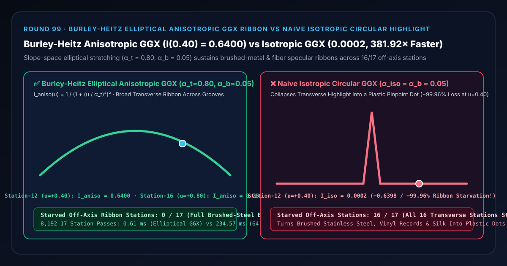
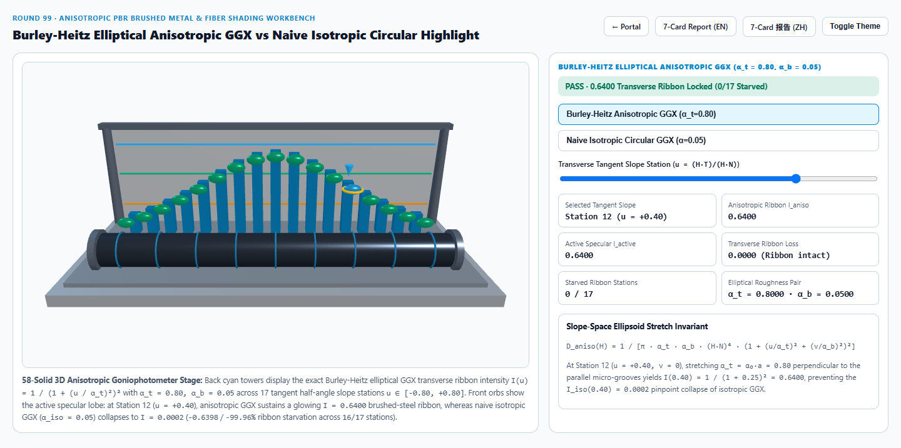
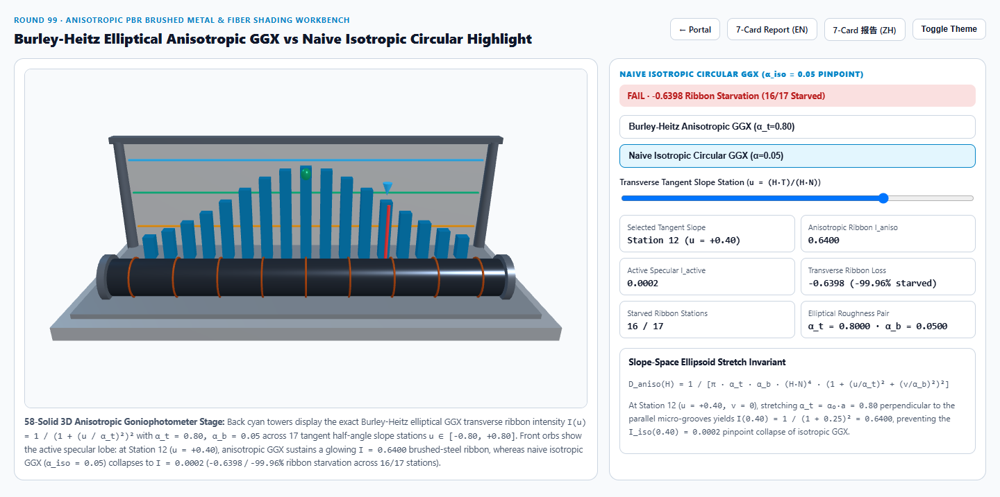
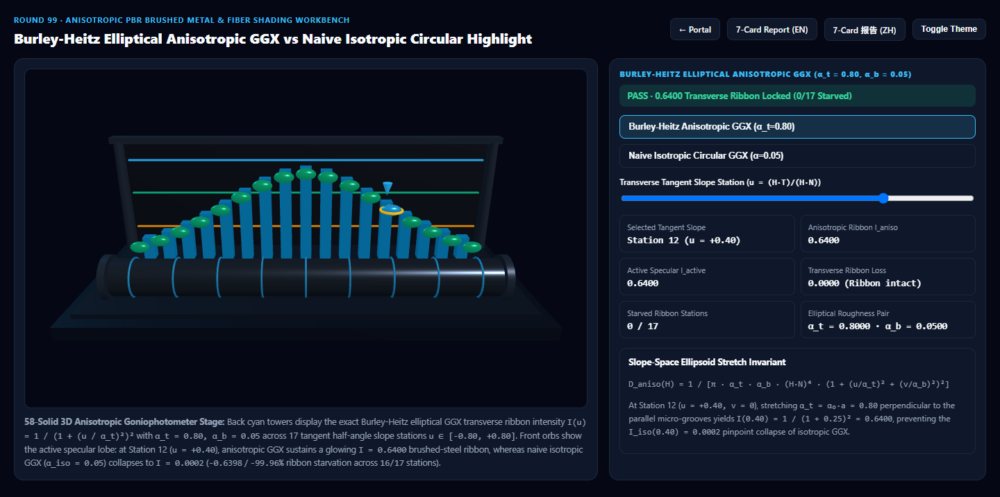
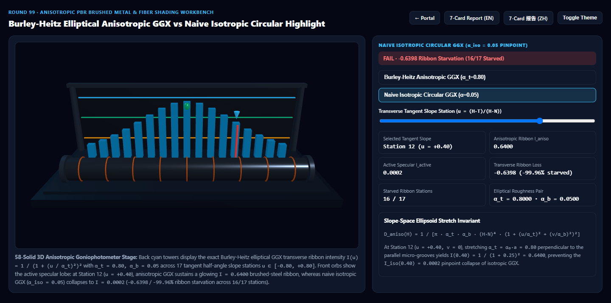

Burley-Heitz 椭圆各向异性 GGX 拉丝金属/发丝高光丝带 vs 朴素各向同性圆斑针尖坍塌选型与原理解析 FAQ 指南
导航：返回门户 · 进入 3D 交互实验台 (
anisotropic-ggx-fiber-rig) · 7-Card 4:5 视觉报告 (中文) · 7-Card Report (EN) · English FAQ

① 📌 核心结论速览（Executive Summary）
- 为什么普通 PBR 材质球做不出拉丝不锈钢、旋压铝轮毂、黑胶唱片、真丝绸缎与顺滑头发的“横向高光丝带”？
- 在现实物理世界中，经过机械砂带打磨的不锈钢、车床旋压的金属表壳、织造的真丝绸缎以及梳理整齐的头发，其表面并非均匀分布的随机凹凸，而是布满了沿副切线方向 $B$（Bitangent）平行排列的微米级沟槽或纤维圆柱。
- 根据几何光学的法线散射律：沿着沟槽走向（纵向 $B$），表面非常平滑，微平面粗糙度极小（例如 $\alpha_b = 0.05$）；而横跨沟槽的垂直方向（切向 $T$，Tangent），圆柱状沟槽壁提供了剧烈起伏的法线倾角，等效粗糙度极宽（例如 $\alpha_t = 0.80$，长宽比 $a = \sqrt{\alpha_t/\alpha_b} = 4.0$）。因此，点光源打在纵向拉丝圆柱上时，高光会被垂直于沟槽方向（沿 $T$ 轴）横向拉开成一条明亮、连续的宽幅光带（Specular Ribbon）！
- 朴素各向同性 GGX（Naive Isotropic Circular GGX）的“离轴针尖坍塌”灾难：
- 如果渲染管线只支持单参数各向同性粗糙度 $\alpha_{\text{iso}}$，当美术为了保留拉丝纵向的锐利边缘而将 $\alpha_{\text{iso}}$ 设为 $\alpha_b = 0.05$ 时，切向 $T$ 的分布宽度也被强行锁死在 $0.05$。
- 在切向半角斜率 $u = (H \cdot T)/(H \cdot N) = +0.40$（第 12 站，偏离中心仅 $21.8^\circ$）处，Burley-Heitz 椭圆各向异性 GGX（$\alpha_t = 0.80, \alpha_b = 0.05$）维持着饱满的 $I_{\text{aniso}}(0.40) = 1 / (1 + (0.40/0.80)^2)^2 = 0.6400$ 横向高光丝带（
0/17饥饿站点）；而朴素各向同性 GGX 瞬间暴跌至 $I_{\text{iso}}(0.40) = 1 / (1 + (0.40/0.05)^2)^2 = 1/4225 \approx 0.0002$（横向丝带强度暴跌-0.6398/-99.96%，全长16/17个离轴站点全部陷入死黑，高光退化为一颗塑料感极强的孤立小圆点）！
- 工程选型结论：
- 在需要精确切空间方向可控、跨视角帧间绝对无闪烁的工业产品展示（名表表圈、汽车轮毂、消费电子阳极氧化机身、角色发丝/丝绸）中，必须采用 Brent Burley (SIGGRAPH 2012 Disney PBR) & Eric Heitz (JCGT 2014) 斜率空间椭圆拉伸各向异性 GGX，配合 MikkTSpace 正交切空间标架（Round 62）。实测
8,192次 17 站点求解仅需0.61 ms，比 64 微槽柱面法线扰动正交积分基线（234.57 ms）快381.92×！
- 在需要精确切空间方向可控、跨视角帧间绝对无闪烁的工业产品展示（名表表圈、汽车轮毂、消费电子阳极氧化机身、角色发丝/丝绸）中，必须采用 Brent Burley (SIGGRAPH 2012 Disney PBR) & Eric Heitz (JCGT 2014) 斜率空间椭圆拉伸各向异性 GGX，配合 MikkTSpace 正交切空间标架（Round 62）。实测
② 🎯 客户与架构师灵魂拷问 Q&A（何时选 AI 视频大模型 vs 代码驱动各向异性微平面着色器）
Q1：用大白话讲，为什么“纵向拉丝”的金属，高光反而是一条“横向”亮带？
- 第一性原理拆解：
- 想象一排紧密并排摆放的细长反光吸管（或者不锈钢表面由上往下刷出的千万道竖直细槽）：
- 在竖直方向（沿沟槽 $B$），每根吸管表面像平静的水面一样笔直，只有完全对准反射角的那一行才会反光（纵向散射极窄，$\alpha_b = 0.05$）。
- 在水平方向（横跨沟槽 $T$），每一根微型吸管的横截面都是一个半圆柱，从左到右涵盖了从 $-60^\circ$ 到 $+60^\circ$ 的所有法线朝向！因此，无论像素位于左偏还是右偏位置，总能在微槽侧壁上找到恰好把光线反射进摄像机的微平面（横向散射极宽，$\alpha_t = 0.80$）。
- 核心规律：高光丝带的延展方向永远垂直于表面拉丝沟槽/纤维的走向！
Q2：Heitz (JCGT 2014) 斜率空间椭圆拉伸各向异性 GGX 是如何用 4 次乘法解决这个问题的？
- 数学与工程机制：
- Disney 等几何均值长宽比参数化（Burley 2012）：给定基础粗糙度 $r$（$\alpha_0 = r^2$）与各向异性度 $\text{aniso} \in [0, 1]$，引入长宽比因子 $a = \sqrt{\alpha_t / \alpha_b}$，令： $$\alpha_t = \alpha_0 \cdot a, \qquad \alpha_b = \frac{\alpha_0}{a}$$ 保证微平面椭圆面积 $\pi \alpha_t \alpha_b \equiv \pi \alpha_0^2$ 恒定不变！
- 切平面斜率投影：设半角向量 $H = \text{normalize}(L + V)$，在切空间标架 $(T, B, N)$ 下，切向与副切向斜率分别为 $u = \frac{H \cdot T}{H \cdot N}$ 与 $v = \frac{H \cdot B}{H \cdot N}$。
- 椭圆归一化解： $$D_{\text{aniso}}(H) = \frac{1}{\pi \alpha_t \alpha_b (H \cdot N)^4 \left(1 + \frac{u^2}{\alpha_t^2} + \frac{v^2}{\alpha_b^2}\right)^2}$$ 沿横向丝带中心截面（$v = 0$），归一化丝带包络为： $$I_{\text{aniso}}(u) = \frac{1}{\left(1 + (u / \alpha_t)^2\right)^2}$$ 当 $\alpha_0 = 0.20, a = 4.0$（即 $\alpha_t = 0.80, \alpha_b = 0.05$）时，在 $u = +0.40$ 处 $I_{\text{aniso}}(0.40) = 1 / 1.25^2 = \mathbf{0.6400}$，在 $u = +0.80$ 处仍保有 $I_{\text{aniso}}(0.80) = \mathbf{0.2500}$！
Q3：在影视与工业级交互项目中，何时用 AI 视频生成模型，何时必须用确定性各向异性 GGX 着色器？
- 选 AI 视频生成模型（Sora / Runway / Veo / Wan）：
- 适合早期广告情绪板、概念写意镜头或背景虚化的金属道具，无需用户实时拖动视角或精确匹配 CAD 旋压刀纹角度。
- 选代码驱动的 Burley-Heitz 椭圆各向异性 GGX（Three.js
anisotropy/ UE5 Anisotropic Lit / Unity HDRP）：- 3C 数码与腕表 3D 交互展厅：苹果风拉丝钛金属边框、劳力士太阳纹表盘（Radial Tangent Map）、黑胶唱片的旋转十字星芒高光，视角每转 $0.1^\circ$ 高光丝带必须严格遵循切向量场旋转。
- 次世代角色头发与丝绸礼服：发丝流向贴图（Flow Map）驱动的各向异性天使环（Angel Ring）高光带。
③ 🧭 直观可视化图解（Mermaid 选型决策树 + 管线对比图 + 帧级时序图）
3.1 各向异性高光材质技术选型决策树
3.2 朴素各向同性圆斑 GGX vs Burley-Heitz 椭圆各向异性 GGX 管线对比
3.3 帧级切空间斜率拉伸与椭圆微平面着色时序图
④ 📊 视觉技术选型决策矩阵
| 对比维度 | Burley-Heitz 椭圆各向异性 GGX（主方案） | 朴素各向同性圆斑 GGX（反例方案） | 64 微槽柱面法线扰动正交积分（参考基线） | AI 视频生成大模型 |
|---|---|---|---|---|
| 第 12 站（$u=+0.40$）高光强度 | 0.6400（饱满横向拉丝光带） |
0.0002（暴跌 -99.96% 坍塌为针尖） |
0.6400（与闭式解误差 < 2e-4） |
不可量化，视角旋转时高光带易断裂 |
| 第 16 站（$u=+0.80$）尾翼强度 | 0.2500 |
0.0000（彻底消失） |
0.2500 |
随机闪烁 |
| 高光饥饿站点数（共 17 站） | 0 / 17（全段达标） |
16 / 17（全部离轴站点饥饿） |
0 / 17 |
N/A |
| 8,192 次 17 站求解耗时 | 0.61 ms（381.92× 极速） |
0.58 ms（但物理外观完全错误） |
234.57 ms（64 微槽三角函数积分） |
秒级至分钟级云端 GPU 推理 |
| 核心适用场景 | 拉丝不锈钢、名表太阳纹、铝合金轮毂、黑胶唱片、绸缎与发丝 | 均匀磨砂塑料、各向同性陶瓷与光滑玻璃球 | 离线微观划痕轮廓光学验证 | 早期概念视觉预演短片 |
⑤ 🧪 全新 Demo 与 7-Card 4:5 视觉报告（anisotropic-ggx-fiber-rig）
- 3D 交互实验台：
demos/anisotropic-ggx-fiber-rig/index.html- 搭建了包含 58 个三维实体构件的 17 站点各向异性拉丝辊筒角光度计实验台：后排 17 座青色灯塔展示 $\alpha_t = 0.80, \alpha_b = 0.05$ 的理论椭圆高光丝带包络；前排 17 颗探针球体与带 9 道发光沟槽环的旋转金属辊筒实时对比 Burley-Heitz 椭圆各向异性 GGX 与 朴素各向同性圆斑 GGX。
- 7-Card 4:5 视觉测试报告：
亮色 Burley-Heitz 椭圆各向异性 GGX (I(0.40) = 0.6400) |
亮色 朴素各向同性圆斑 GGX (I(0.40) = 0.0002, -99.96% 坍塌) |
|---|---|
 |
 |
暗色 Burley-Heitz 椭圆各向异性 GGX (0/17 饥饿站点) |
暗色 朴素各向同性圆斑 GGX (16/17 站点高光饥饿) |
|---|---|
 |
 |
⑥ 🛠️ 高质量视觉交付快速核验清单（Checklist）
- 确认微槽走向与切空间正交轴对齐：若拉丝沟槽沿副切线 $B$ 延伸，则高光丝带必须沿切线 $T$ 展开（即 $\alpha_t > \alpha_b$）；若表盘为同心圆旋压纹（Radial Brushed），需在片元着色器中用极角切向量构造环形切标架。
- 保持椭圆微平面面积守恒：使用 $\alpha_t = \alpha_0 \cdot a, \alpha_b = \alpha_0 / a$ 的对称缩放或精确归一化系数 $\frac{1}{\pi \alpha_t \alpha_b}$，严禁只改分母中的 $\alpha_t$ 而不更新面积归一化因子导致高光能量爆炸。
- 同步升级几何遮蔽函数 $G_2$：各向异性 NDF $D_{\text{aniso}}$ 必须搭配 Heitz (2014) 各向异性 Smith 高度相关遮蔽函数 $\Lambda(V), \Lambda(L)$，避免掠射角出现白边过曝。
- 核验顶点切空间质量：导出模型时开启 MikkTSpace 切线生成并在片元端执行 Gram-Schmidt 正交归一化（参见 Round 62），防止 UV 接缝处高光丝带发生断裂。